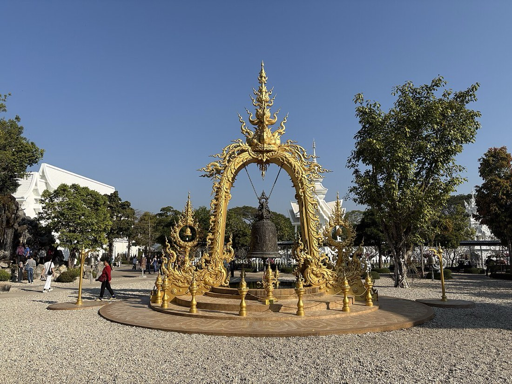

📷 Chainwit.วัด-สิ่งศักดิ์สิทธิ์ · Wats & Sacred Places (307)
— ผู้สนับสนุน · sponsor —พื้นที่นี้ว่างสำหรับร้านของคุณ — โฆษณาแบบปี 1997 สุภาพ ไม่ตามรอยใคร · This space is open for your shop — 1997-style ads: polite, no trackingลงโฆษณาที่นี่ · advertise here
🐜 = ข้อมูลที่มีแล้ว เต็มที่ ๙ ตัว — ชื่อไทย ชื่ออังกฤษ เบอร์ LINE เวลาเปิด เว็บ รูป เจ้าของยืนยัน และมดเพิ่งไปเดิน · ข้อมูลคืออำนาจ เติมให้ครบได้ฟรี · 🐜 = one ant per fact we hold, nine when a listing is complete — Thai name, English name, phone, LINE, hours, a live website, a photo, owner-confirmed, recently walked. Information is power; filling it in is free.
- Brother of Doi Kum🐜1
- Buddhist temple🐜1
- Chedi Liam Temple🐜2
- Ganesha Shrine🐜1
- House of Spirit🐜1
- Khuong Singh🐜1
- วัดเจดีย์หลวงวรวิหาร · Wat Chedi Luang🐜3🛕 พระอารามหลวง ชั้นตรี · Royal temple, third class
- วัดเชียงมั่น · Wat Chiang Man🐜3
- Wat Huai Fai🐜1
- Wat Kaotanluang🐜1
- Wat Khao Thaen Noi🐜1
- Wat Langka🐜1
- Wat Naboon Thammaram🐜1
- Wat Naboon Thammaram🐜1
- Wat Nang Liao🐜2
- วัดพันเตา · Wat Phan Tao🐜3
- Wat Phra Singh🐜1🛕 พระอารามหลวง ชั้นเอก · Royal temple, first class
- Wat Piyaram🐜1
- Wat Sala🐜1
- Wat San Mueang Pracharam🐜1
- Wat San Sai Ton Kok🐜1
- วัดศรีเกิด · Wat Si Koet🐜3
- Wat Sri Sawat🐜1
- ที่พักสงฆ์พุทธรรมหนองฮ่อ · Buddha Dhamma Nonghor Monastery🐜2
- พลับพลาเทิดพระเกียรติ 400 ปี สมเด็จพระนเรศวรมหาราช · King Naresuan 400th Anniversary Royal Pavilion🐜3
- พุทธสถานเชียงใหม่ · Chiang Mai Buddhist Shrine🐜2
- มูลนิธิ อริยสถานธรรม แห่งปัญญา · Ariyasathantham Haeng Panya Foundation🐜2
- วดโขงขาว · Wat Kongkaw🐜2
- วัดกองทราย · Wat Kong Sai🐜2
- วัดกำแพงงาม · Wat Kamphaeng Ngam🐜2
- วัดกูเสือ · Wat Ku Suea🐜2
- วัดกู่คำ · Wat Ku Kham🐜2
- วัดกู่ม่านมงคลชัย · Wat Ku Man Mongkhon Chai🐜2
- วัดกู่เต้า · Wat Ku Tao🐜3
- วัดกู่แดง · Wat Ku Daeng🐜2
- วัดข่วงสิงห์ · Wat Khuang Sing🐜2
- วัดควรค่าม้า · Wat Khuan Kama🐜3
- วัดคอกหมูป่า · Wat Khok Mupa🐜2
- วัดจอมทอง · Wat Chomthong🐜2
- วัดฉิมพลีวัน · Wat Chimphli Wan🐜2
- วัดชมพู · Wat Chomphu🐜3
- วัดชมพูนุท (วังป้อง) · Wat Chomphunut (Wang Pong)🐜2
- วัดชัยพระเกียรติ · Wat Chai Phrakiat🐜3
- วัดชัยมงคล · Wat Chaimongkol🐜3
- วัดชัยศรีภูมิ · Wat Chai Sri Phoon🐜3
- วัดชัยสถาน · Wat Chai Sathan🐜2
- วัดชัยสถิตย์ (ป่าเสร้าหลวง) · Wat Chai Sathit (Pa Sao Luang)🐜2
- วัดช่างฆ้อง · Wat Chang Kong🐜3
- วัดช่างทอง · Wat Changthong🐜2
- วัดช่างเคิ่ง · Wat Chang Khoeng🐜2
- วัดช่างเคี่ยน · Wat Chang Kian🐜2
- วัดช่างแต้ม · Wat Chang Taem🐜3
- วัดช้างคำ · Wat Chang Kham🐜2
- วัดช้างค้ำ · Wat Chang Kham🐜3
- วัดดวงดี · Wat Duang Di🐜3
- วัดดอกคำ · Wat Dokkham🐜3
- วัดดอกเอื้อง · Wat Dokeung🐜2
- วัดดอนจั่น · Wat Don Chan🐜2
- วัดดอนจืน · Wat Don Chuen🐜2
- วัดดอนชัย · Wat Don Chai🐜2
- วัดดอนชัย · Wat Don Chai🐜2
- วัดดอนปิน · Wat Don Pin🐜2
- วัดดอนแก้ว · Wat Don Kaeo🐜2
- วัดดอนแก้ว · Wat Don Keaw🐜2
- วัดดอยเปา · Wat Doi Pao🐜2
- วัดดอยแก้ว · Wat Doi Kaeo🐜2
- วัดดับภัย · Wat Dubphai🐜3
- วัดดาวดึงส์ · Wat Dao Dueng🐜2
- วัดตองกาย · Wat Tong Kai🐜2
- วัดตำหนักสวนขวัญศิริมังคลาจารย์ · Wat Tamnak Suankhwan Sirimangkalajarn🐜3
- วัดต้นจันทน์ · Wat Tanjan🐜2
- วัดต้นผึ้ง · Wat Ton Phueng🐜2
- วัดต้นยางหวง · Wat Tonyang Huang🐜2
- วัดต้นเกว๋น · Wat Ton Kwen🐜3
- วัดต้นเหียว · Wat Ton Hiao🐜2
- วัดต้นแก้ว · Wat Thon Kaew🐜2
- วัดต้นโชคหลาง · Wat Ton Chok Lang🐜2
- วัดถาวรธรรม · Wat Thawon Tham🐜2
- วัดทรายมูล · Wat Sai Mun🐜3
- วัดทรายมูล (พม่า) · Wat Sai Moon Myanmar🐜3
- วัดทรายมูลเมือง · Wat Saimoonmuang🐜3
- วัดทุงยู · Wat Tung Yu🐜3
- วัดทุ่งขี้เสือ · Wat Thung Khi Suea🐜2
- วัดทุ่งป่าเก็ด · Wat Thung Pa Ket🐜2
- วัดท่าข้าม · Wat Tha Kham🐜2
- วัดท่าต้นกวาว · Wat Tha Ton Kwao🐜2
- วัดท่าทุ่ม · Wat Tha Thum🐜2
- วัดท่าสะต๋อย · Wat Tha Sa Toi🐜2
- วัดท่าหลุก · Wat Tha Luk🐜2
- วัดท่าเกวียน🐜1
- วัดท่าเดื่อ · Wat Tha Duea🐜2
- วัดท่าใหม่อิ · Wat Tha Mai I🐜2
- วัดท้าวบุญเรือง · Wat Thao Bun Rueang🐜2
- วัดธรรมประดิษฐ์สถาน · Wat Tham Pradit Sathan🐜2
- วัดธาตุกลาง🐜1
- วัดธาตุคำ · Wat Thatkam🐜3
- วัดนันทารา · Wat Nan Tha Ra🐜2
- วัดนันทาราม · Wat Nantaram🐜3
- วัดนำโจ้ · Wat Nam Cho🐜2
- วัดบวกครกน้อย · Wat Buak Khrok Noi🐜2
- วัดบวกครกหลวง · Wat Buak Khrok Luang🐜3
- วัดบวกครกเหนือ · Wat Buak Khrok North🐜2
- วัดบวกครกใต้ · Wat Buak Khrok South🐜2
- วัดบุปผา · Wat Buppha🐜2
- วัดบุพพาราม · Wat Bupparam🐜3
- วัดบ้านกลาง · Wat Ban Klang🐜2
- วัดบ้านท่อ · Wat Ban Tho🐜2
- วัดบ้านท่อ · Wat Ban Tho🐜2
- วัดบ้านมอญ · Wat Banmon🐜2
- วัดประทานพร · Wat Prathan Phon🐜2
- วัดประสาทธรรม · Wat Prasat Tham🐜2
- วัดปราสาท · Wat Prasat🐜3
- วัดปันเสา(พันเสา) · Wat Pan Sao🐜2
- วัดปันเส่า🐜1
- วัดปากเหมือง · Wat Pak Mueang🐜3
- วัดป่งช้างคด · Wat Pong Chang Khot🐜2
- วัดป่ากล้วย · Wat Pa Kluai🐜2
- วัดป่าข่อยเหนือ · Wat Pa Khoi Nuea🐜2
- วัดป่าข่อยใต้ · Wat Pa Khoi Tai🐜2
- วัดป่างิ้ว (ครูบาทันใจ) · Wat Pa Ngio (Khru Ba Thanchai)🐜2
- วัดป่าจี้ · Wat Pa Chi🐜2
- วัดป่าตัน · Wat Pa Tan🐜2
- วัดป่าบง · Wat Pa Bong🐜2
- วัดป่าพร้าวนอก · Wat Pa Phrao Nok🐜2
- วัดป่าพร้าวใน · Wat Pa Phrao Nai🐜3
- วัดป่าลาน · Wat Pa Lan🐜2
- วัดป่าเปอะ · Wat Pa Poe🐜2
- วัดป่าเป้า · Wat Pa Pao🐜3
- วัดป่าแคโยง · Wat Pa Khae Yong🐜2
- วัดป่าแดง · Wat Padaeng🐜3
- วัดป่าแดด · Wat Pa Daet🐜2
- วัดป่าแพ่ง · Wat Pa Phaeng🐜2
- วัดป้านปิง · Wat Panping🐜3
- วัดผางยอย · Wat Phang Yoi🐜2
- วัดผาบ่อง · Wat Pha Bong🐜3
- วัดผาลาด · Wat Pha Lat🐜2
- วัดผ้าขาว · Wat Pha Khao🐜2
- วัดฝายหิน · Wat Faihin🐜2
- วัดพญาชมภู · Wat Phaya Chom Phu🐜2
- วัดพระธาตุดอยคำ · Wat Phra That Doi Kham🐜3
- วัดพระธาตุดอยคํา · Wat Phratat Doikham🐜2
- วัดพระธาตุดอยสุเทพ · wat Phrathat Doi Suthep Racha Worawihan🐜3🛕 พระอารามหลวง ชั้นโท · Royal temple, second class
- วัดพระธาตุดอยสุเทพราชวรวิหาร · Wat Phra That Doi Suthep🐜2🛕 พระอารามหลวง ชั้นโท · Royal temple, second class
- วัดพระนอนขอนม่วง · Wat Phra Non Khon Muang🐜3
- วัดพระนอป่าเก็ดถี · Wat Phra No Pa Ket Thi🐜2
- วัดพระเจดีย์ · Wat Phra Chedi🐜2
- วัดพระเจ้าเม็งราย · Wat Phra Chao Meng Rai🐜3
- วัดพวกช้าง · Wat Puak Chang🐜2
- วัดพวกหงษ์ · Wat Phuak Hong🐜3
- วัดพวกเปีย · Wat Puak Pia🐜3
- วัดพวกแต้ม · Wat Phuak Taem🐜3
- วัดพันตอง · Wat Phan Tong🐜2
- วัดพันอ้น · Wat Phun Ohn🐜3
- วัดพันอ้น🐜1
- วัดพันแหวน · Wat Pan Whaen🐜3
- วัดพุทธารามบ้านแหวน · Wat Phuttharam Ban Waen🐜2
- วัดฟ่อนสร้อย · Wat Fon Soi🐜3
- วัดฟ้ามุ่ย · Wat Famui🐜2
- วัดฟ้าฮ่าม · Wat Fa Ham🐜3
- วัดมงคลรัตนาราม · Wat Mongkhon Rattana Ram🐜2
- วัดมงคลวนาราม · Wat Mongkhon Wana Ram🐜2
- วัดมงคลเศรษฐี · Wat Mongkhon Setthi🐜2
- วัดมหาวัน · Wat Mahawan🐜3
- วัดยางกวง · Wat Yang Kuang🐜3
- วัดราชมณเทียร · Wat Rachamontian🐜3
- วัดร่ำเปิง (ตโปทาราม) · Wat Ram Poeng (Tapotaram)🐜3
- วัดร้องดอนไชย · Wat Rong Don Chai🐜2
- วัดร้องยาว · Wat Rong Yao🐜2
- วัดร้องสัก · Wat Rong Sak🐜2
- วัดร้องอ้อ · Wat Rong O🐜2
- วัดร้อยจันทร์ · Wat Roi Chan🐜2
- วัดลอยเคราะห์ · Wat Loi Kroh🐜2
- วัดลัฏฐวนรามิb · Wat Lat Thuan Ramib🐜2
- วัดล่ามช้าง · Wat Lam Chang🐜3
- วัดวรเวทย์วิสิษฐ์ · Wat Won Wet Wi Sit🐜2
- วัดวังสิงห์คำ · Wat Wang Sing Kham🐜2
- วัดวังสิงห์คำ · Wat Wang Sing Kham🐜2
- วัดวารีสุทธาวาส · Wat Wari Sutthawat🐜2
- วัดวุทฒิราษฏร์ · Wat Wut Thi Ra Sot🐜2
- วัดศรีดอนม · Wat Si Don Mon🐜2
- วัดศรีดอนไชย · Wat Sri Dornchai🐜2
- วัดศรีทรายมูล · Wat Si Sai Mun🐜2
- วัดศรีบุญเรือง🐜1
- วัดศรีบุญเรือง · Wat Si Bun Rueang🐜2
- วัดศรีปิงชัย · Wat Si Ping Chai🐜2
- วัดศรีปิงเมือง · Wat Si Ping Mueang🐜3
- วัดศรีมูลเรือง · Wat Sri Moonrueang🐜2
- วัดศรีวารีสถาน · Wat Si Wari Sathan🐜2
- วัดศรีสองเมือง · Si Song Mueang Temple🐜2
- วัดศรีสุพรรณ · Wat Sri Suphan🐜3
- วัดศรีโขง · Wat Tha Srikhong🐜2
- วัดศรีโสดา · Wat Si Soda (Phra Aram Luang)🐜2🛕 พระอารามหลวง ชั้นตรี · Royal temple, third class
- วัดสมเด๊จดอยน้อย · Wat Som Det Doi Noi🐜2
- วัดสรีคำชมภู · Wat Si Kham Chom Phu🐜2
- วัดสรีโพธาราม · Wat Si Photharam🐜2
- วัดสวนดอก · Wat Suan Dok Monk Chat🐜3🛕 พระอารามหลวง ชั้นตรี · Royal temple, third class
- วัดสวนพริก · Wat Suan Phrik🐜2
- วัดสว่างบรรเทิง · Wat Sawang Ban Thoeng🐜3
- วัดสหัสสคุณ (พันเต้า) · Wat Sahatsa Sakhun (Phan Tao)🐜2
- วัดสันกลาง · Wat San Klang🐜2
- วัดสันกลางเหนือ · Wat San Klang Nuea🐜2
- วัดสันกลางใต้ · Wat San Klang Tai🐜2
- วัดสันคะยอม · Wat San Kha Yom🐜2
- วัดสันคือ · Wat San Khue🐜2
- วัดสันติธรรม · Wat Santi Tham🐜3
- วัดสันต้นกอก · Wat San Ton Kok🐜2
- วัดสันทรายต้นกอก · Wat San Sai Tohn-Gawk🐜2
- วัดสันทรายมูล · Wat San Sai Mun🐜2
- วัดสันทรายหลวง · Wat San Sai Luang🐜2
- วัดสันนาเม็ง · Wat San Na Meng🐜2
- วัดสันปูเลย · Wat San Pu Loei🐜2
- วัดสันป่าข่อย · Wat San Pa Khoi🐜2
- วัดสันป่าค่า · Wat San Pa Kha🐜2
- วัดสันป่าสัก · Wat San Pa Sak🐜2
- วัดสันป่าสักวรอุไรธรรมาราม · Wat San Pa Sak Won Urai Thamma Ram🐜2
- วัดสันป่าเลียง · Wat San Pa Liang🐜2
- วัดสันพระเนตร🐜1
- วัดสันศรี · Wat San Si🐜2
- วัดสันหลวง · Wat San Luang🐜2
- วัดสารภี · Wat Saraphi🐜2
- วัดสำเภา · Wat Sam Pao🐜3
- วัดสีมาราม · Wat Sima Ram🐜2
- วัดสุพรรณ · Wat Suphan🐜2
- วัดหนองคำ · Wat Nong Kham🐜2
- วัดหนองคำ🐜1
- วัดหนองป่าครั่ง · Wat Nong Pa Khrang🐜2
- วัดหนองป่าแสะ · Wat Nong Pa Sae🐜2
- วัดหนองผึ้ง · Wat Nong Phueng🐜2
- วัดหนองสี่แจ่ง · Wat Nong Si Chaeng🐜2
- วัดหนองอุโบสถ · Wat Nong Ubosot🐜2
- วัดหนองอุโบสถ · Wat Nong Ubosot🐜2
- วัดหนองแฝก · Wat Nong Faek🐜2
- วัดหนองโค้ง · Wat Nong Khong🐜2
- วัดหนองไคร้หลวง · Wat Nong Krai Luang🐜2
- วัดหมื่นตุม · Wat Muentoom🐜3
- วัดหมื่นล้าน · Wat Muen Larn🐜3
- วัดหมื่นสาร · Wat Muen San🐜3
- วัดหมื่นเงินกอง · Wat Muen Ngun Gong🐜3
- วัดหมูบุ่น · Wat Moo Boon🐜2
- วัดหม้อคำตวง · Wat Mo Kham Tuang🐜3
- วัดหลักปัน · Wat Lak Pan🐜2
- วัดหวลการณ์ · Wat Huan Kan🐜2
- วัดหองเฃาคำ · Wat Hong Ao Kham🐜2
- วัดหัวฝาย · Wat Hua Fai🐜3
- วัดอนาคามี · Wat Anagami🐜2
- วัดอินทขีลสะดือเมือง · Wat Inthakhin Sadue Muang🐜3
- วัดอุปคุต · Wat Up Khut🐜3
- วัดอุโบสถ · Wat Ubosot🐜2
- วัดอุโบสถ · Wat Ubosot🐜2
- วัดอุโบสถ · Wat Ubosot🐜2
- วัดอุโมงค์(สวนพุทธรรม) · Wat Umong (Suan Buddha Dhamma)🐜2
- วัดอุโมงค์มหาเถรจันทร์ · Wat Umong Maha Therachan🐜3
- วัดอู่ทรายคำ · Wat Ou Sai Kham🐜2
- วัดเกตการาม · Wat Ket Karam🐜3
- วัดเกาะกลาง · Wat Ko Klang🐜2
- วัดเจดีย์เหลี่ยม · Chedi Liam Temple🐜2
- วัดเจติยานุสรณ์ · Wat Jetiyanusorn🐜2
- วัดเจ็ดยอด · Wat Jed Yod🐜3🛕 พระอารามหลวง ชั้นตรี · Royal temple, third class
- วัดเจ็ดลิน · Wat Chet Lin - Wat Jedlin🐜3
- วัดเชฏฐาวรคุปต์ · Wat Chet Tha Won Khup🐜2
- วัดเชตวัน · Wat Cheatawan🐜3
- วัดเชตุพน · Wat Chetupon🐜2
- วัดเชียงขาง · Wat Chiang Khang🐜2
- วัดเชียงยืน · Wat Chiang Yuen🐜3
- วัดเชียงโฉม · Wat Chiang Chom🐜3
- วัดเมธัง🐜2
- วัดเมืองกาย · Wat Mueang Kai🐜2
- วัดเมืองขอน · Wat Mueang Khon🐜2
- วัดเมืองมาง · Wat Mueang Mang🐜3
- วัดเมืองลัง · Wat Mueang Lang🐜2
- วัดเมืองวะ · Wat Mueang Wa🐜2
- วัดเมืองสาตรน้อย · Wat Mueang Sattra Noi🐜2
- วัดเมืองสาตรหลวง · Wat Mueang Sattra Luang🐜2
- วัดเมืองเล็น · Wat Mueang Len🐜2
- วัดเวฬุวัน · Wat Weluwan🐜2
- วัดเสาหิน · Sao Hin Temple🐜3
- วัดแม่กวง · Wat Mae Kuang🐜2
- วัดแม่คาว · Wat Mae Khao🐜2
- วัดแม่ย่อยหลวง · Wat Mae Yoi Luang🐜2
- วัดแม่สะลาบ · Wat Mae Sa Lap🐜2
- วัดแม่สาหลวง · Wat Mae Sa Luang🐜2
- วัดแม่หยวก · Wat Mae Yuak🐜2
- วัดแม่แก้ดน้อย · Wat Mae Kaet Noi🐜2
- วัดแสนฝาง · Wat Saen Fang🐜3
- วัดแสนหลวง · Wat Saen Luang🐜2
- วัดแสนเมืองมาหลวง · Wat Saen Mueang Ma Luang🐜3
- วัดโป่งน้อย · Wat Pong Noi🐜2
- วัดโพธิพิชิต · Wat Phothi Phichit🐜2
- วัดโพธิมงคล · Wat Phot Mongkhon🐜2
- วัดโลกโมฬี · Wat Lok Molee🐜3
- วัดโสภานาราม · Wat Sopanaram🐜2
- วัดใหม่ห้วยทราย · Wat Mai Huay Sai🐜2
- วัดไชยมงคล · Wat Chai Mongkhon🐜2
- วิหารหลวงพ่อทันใจ พระครูบาเจ้าเทือง นาถสีโล🐜1
- ศาลพระภูมิ🐜1
- ศาลสมเด็จพระนเรศวรมหาราช · King Naresuan Shrine🐜3
- ศาลสมเด็จพระนเรศวรมหาราช บ้านร่มไทย · King Naresuan Maharaj Shrine (Ban Rom Thai)🐜3
- ศาลาธรรม · Sala Tham🐜2
- ศาลาพระเจ้ามรกตนิรมิต · Sala Phrachao Morakot Niramit🐜2
- ศาลเจ้าพ่อหลักเมืองแจ่งกระต๊ำ · Chao Pho Chaeng Katam Shrine🐜2
- สมาคมพุทธภาวนาบุญสถาน🐜1
- สำนักสงฆ์บ้านขุนช่างเคี่ยน🐜1
- สุสานปิงห่าง🐜1
- หอคำหลวง · Royal Pavilion🐜2
- หอสมเด็จพระพุทธปัญญาธรรม🐜1
- เทพมณเฑียร · Thep Montien🐜2
- ไท่หลินฝอเอวี้ยน · Thai Lin Foawian🐜2
⬇ GeoJSON (307 จุด · points)